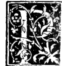

Chapter V: On the Fitting Title of the Present Treatise
On the Fitting Title of the Present Treatise

It seems to me, Most Exalted Duke, that the fitting title of our treatise ought to be On the Divine Proportion (De la Divina Proportione). And this is on account of many similar correspondences (convenientie) belonging to God Himself that I find in our proportion, whereof we intend to treat in this our most useful discourse. Among these correspondences, we shall take four—and a fifth—as sufficient for our purpose:
First Correspondence: UnityThe first correspondence is that it is one alone and no more; and it is impossible to assign to it any other species or differences. And this Unity (unità) is the supreme epithet of God Himself, according to the entire theological and philosophical school.
Second Correspondence: The Holy TrinityThe second correspondence is that of the Holy Trinity: namely, just as in divinis one and the same substance resides among three Persons—Father, Son, and Holy Spirit—so one and the same proportion of this kind must always be found among three terms [the whole $a+b$, the major part $a$, and the minor part $b$, where $(a+b) : a = a : b$], and can never be found in either more or fewer, as will be explained.
Third Correspondence: Ineffability and IrrationalityThe
third correspondence is that just as God cannot be properly defined nor made intelligible to us through words, so this our proportion can never be assigned by any intelligible [rational] number nor expressed by any rational quantity, but always remains hidden and secret (
occulta e secreta), and is called by mathematicians
irrational (
irrationale).
Fourth Correspondence: Immutability and OmnipresenceThe fourth correspondence is that just as God can never change, and is all in all and all in every part (tutto in tutto e tutto in ogni parte), so our present proportion, in every continuous and discrete quantity—whether great or small—is always one and the same and ever invariable, and can in no wise be altered, nor apprehended otherwise by the intellect, as our discourse will demonstrate.
Fifth Correspondence: Formal Being of Heaven and the Five Regular BodiesA
fifth correspondence may not undeservedly be joined to the aforesaid four: namely, just as God confers being (
l’essere) upon the Celestial Virtue—otherwise called the
Fifth Essence (
quinta essentia)—and through it upon the other four simple bodies, that is, the four elements
Earth,
Water,
Air, and
Fire, and through these confers being upon every other thing in nature; so too this our sacred proportion gives formal being (
l’esser formale)—according to ancient
Plato in his
Timaeus (53c–56c)—to Heaven itself, assigning to it the figure of the body called the
Dodecahedron (
Duodecedron), otherwise known as the body of twelve pentagons, which, as will be shown below, cannot possibly be formed without our proportion.
And similarly, it assigns to each of the other elements its own proper form, in no way coinciding with one another:
These forms and figures are all called by the wise the Regular Bodies (corpi regulari), as will be told separately of each below; and then, through these, it gives form to infinitely many other bodies called Dependent Bodies (corpi dependenti). Nor is it possible for those five regular bodies to be proportioned to one another, or to be understood as circumscribable by a sphere ([XIII.13]–[XIII.18]), without our said proportion, all of which will appear below. Although many other correspondences could be adduced, let these suffice for the fitting naming of the present compendium.